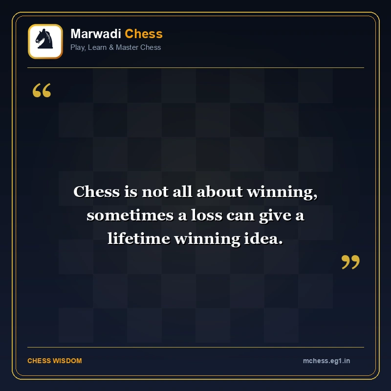

Master the Art of Strategy with
Marwadi Chess
Marwadi Chess (मारवाड़ी शतरंज) is a modern, community-driven chess portal dedicated to chess learning and strategic play. From grandmaster opening traps and tactical checkmate drills to peer-to-peer matchmaking and timeless chess philosophy, we make royal strategy accessible to players everywhere.

Celebrating 4,500 Years of Chess Heritage
Chess is one of humanity’s greatest intellectual treasures, originating in ancient India over 4,500 years ago as Chaturanga (चतुरङ्ग) and Ashtapada during the Indus Valley civilization. From ancient carved stone tablets to modern digital battlefields, the royal game of strategy has trained minds, sharpened intuition, and crossed continents.
The spirit of Marwadi Chess draws inspiration from this rich cultural tradition—embodying foresight, meticulous calculation, and disciplined strategy. We honor this timeless legacy by bridging ancient chess philosophy with modern digital web engineering.
-
2500 BCE (Indus Valley): Early board dice & Ashtapada grids.
-
6th Century CE (India): Four-division military game Chaturanga.
-
7th-15th Century (Persia & Europe): Shatranj evolves into modern international chess.
-
Today (Marwadi Chess): Universal, open-source digital arena for learners worldwide.
Explore the Ecosystem
Everything you need to learn, train, play, and analyze—curated into a fast, lightweight, and responsive experience.
Live Play Online
Challenge friends or global players with custom time controls (3m, 5m, 10m, 30m), peer-to-peer matchmaking, digital clocks, and PGN export.
Play vs. Stockfish
Practice against the world-class Stockfish 16 engine across 20 granular difficulty levels with move hints, side selection, and move undo.
Daily Chess Tactics
Solve fresh daily puzzles powered by official Lichess feeds and Stockfish engine verification with streak tracking and hint systems.
Tactics Trainer
Master checkmating patterns with 500+ curated Mate-in-2, Mate-in-3, Mate-in-4, timed sprints, and survival drills.
Opening Traps
Learn lethal opening traps in the Italian, Sicilian, French, and Queen's Gambit to punish early opponent inaccuracies.
Watch Top Live Games
Spectate live Grandmaster matches across 6 channels (Top GM, Blitz, Rapid, Classical, Bullet) with category filters and fullscreen mode.
PGN Game Archives
Study, replay, and analyze historic chess masterpieces move-by-move using our responsive interactive board viewer.
Rules & Studies
Step-by-step rules for beginners, tactical studies with dynamic FEN puzzle boards, and historical grandmaster deep dives.
Technology Behind the Board
Marwadi Chess is engineered to be blazing fast, lightweight, and privacy-respecting without heavy framework overhead.
WebAssembly and Web Worker background execution for zero UI lag.
Real-time daily puzzle integration and Grandmaster broadcast relay.
Low-latency, peer-to-peer multiplayer communication.
Sharp SVG piece rendering scalable from mobile phones to 4K displays.
Clean, performant JavaScript architecture with zero heavy SPA framework bloat.
Fluid typography, container queries, and seamless dark/light theme switching.
Frequently Asked Questions
Common questions about using, playing, and learning on Marwadi Chess.
Is Marwadi Chess free to use?
Do I need to register an account to play online?
Can I play on my mobile phone or tablet?
How is player privacy protected?
Can I contribute or suggest new features?
Public code transparency, modular architecture, and community contributions are in our DNA.
Zero intrusive trackers, full cookie consent transparency, and local data persistence.
Lightweight asset footprints, high accessibility contrast (WCAG 2.1), and seamless Dark Mode.
Built for players, teachers, and enthusiasts around the globe with dedicated platforms.
Join the Marwadi Chess Community
Whether you want to suggest an opening trap, report a feature idea, or contribute code improvements, we’d love to hear from you.